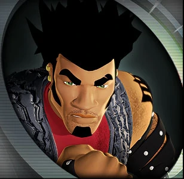

-
Nolo Pasaro

Synkro, High Voltage, Spectyte.
Nolo Pasaro é o atual líder do Teku, está confiante e tem uma paixão por dirigir. Ele tem um ódio feroz por Tork Maddox dos Metal Maniacs , culpando-o pela morte de seu irmão mais velho.
-
Vert Wheeler
Deora II, Reverb.
Um skatista e surfista proeminente antes de se tornar um piloto, ele muitas vezes é muito arrogante e excessivamente zeloso. Ele é um piloto habilidoso, vencendo a World Race e a Ultimate Race, embora duvidando de si mesmo no meio.
-
Kurt Wylde
Sling Shot, Battle Spec.
Ele é um piloto severo, mas pode ser rabugento às vezes. Mostrou algum remorso por suas ações passadas, além de dificuldade em confiar nas pessoas, sempre questionando tudo que pode.
-
Shirako Takamoto
Bassline, Nightlife.
Shirako Takamoto dirige com estilo, refletindo sua paixão pela música. Normalmente não brilha muito nas pistas, mas quando resolve correr pra valer ninguem o segura. Tambem adora irritar porkchop com seus sons extremos.
-
Karma Eiss
Chicane.
Ela é muito calma e equilibrada. Ela aprende rápido, estudando como funcionam os Racing-Drones e o propósito dos Reinos de Corrida. Karma está mais focada em vencer corridas e os Racing Drones do que o drama entre a Teku e a Metal Maniacs.
-
Tork Maddox
Hollowback.
Lider da Metal Maniacs. Embora agressivo e barulhento como os outros da equipe, ele também é severo e equilibrado, mantendo os Metal Maniacs sob controle quando eles saem da linha. Muitas vezes sofre de pesadelos sobre o acidente de Tone Pasaro demostrando remorso.
-
Taro Kitano

Rivited.
Ao contrario de seus companheiros, Taro é calmo, legal e controlado em situações estressantes. É o segundo no comando da Metal Maniacs. Provando ser determinado e focado ao completar o Reino da Água em tempo recorde depois de sair pelo portal dos Racing-Drones faltando menos de 20 min.
-
Mark Wylde
Spine Buster, Flathead Fury.
Após cumprir 2 anos de prisão por culpa de seu irmão, se tornou hostil com quase todos, especialmente seu irmão Kurt, constantemente tenta ter problemas com ele durante os reinos, prometendo resolver tudo com ele e finalmente descidir quem é o melhor piloto.
-
Deezel "Porkchop" Riggs
Jack Hammer, Piledriver.
Ele é o músculo dos Metal Maniacs e rápido em se irritar. Ele usa um colar de osso que ele morde para controlar sua raiva. Se recusa a contornar qualquer obstáculo, preferindo esmaga-los, nunca perdeu uma corrida até conhecer o Teku."
-
Mitchell McClurg "Monkey"
Rollin' Thunder, Rat-ified.
Monkey é um tanto medroso e nervoso, mas muito amigável e inteligente, ocupando o cargo principal de mecânico do grupo, sendo capaz de criar o nitrox 3 1/2 e o sparky. Possui uma queda não correspondida pela Lani.
-
Gelorum
RD-09.
Gelorum, a bela e diabólica líder dos Racing Drones, roubou o anel do poder de Hot Wheels City. sendo criada pelos accelerons para correr, seu unico objetivo é vencer,e agora ela e seus Racing Drones ameaçam se tornar os pilotos mais poderosos do universo.
-
RD-L1
RD-08, RD-05, RD-04.
Um monstro robótico de metal de dois metros e meio, RD-L1 (Racing Drone Tenente 1) é o principal piloto de Gelorum. Ele não vai parar por nada para reivindicar todos os Accelechargers e destruir seus adversários humanos no processo.
-
RD-S1
RD-01, RD-02, RD-03, RD-06.
Compreendendo a maior parte da frota de corrida da Gelorum, os RD-S1 (Racing Drone Soldier 1) podem expandir sua forma básica implantando equipamentos adicionais, incluindo armas e ferramentas especiais.
-
Motorcycle Drone
RD-07.
Os Drones de Motocicleta são muito diferentes dos RD-S1 e RD-L1 , pois sua estrutura e força são menores que a de um humano, eles podem ser facilmente dominados e até rasgados ao meio por ataques humanos.
-
"sweeper-drone" RD-W1
Sweeper.
Enquanto os drones RD-W1 não dirigem nenhum carro, eles são usados nos Reinos por Sweepers. Eles saem dos Sweepers em decúbito dorsal, prendendo-se embaixo do veículo alvo para assumir o controle e forçá-lo a entrar no Sweeper.